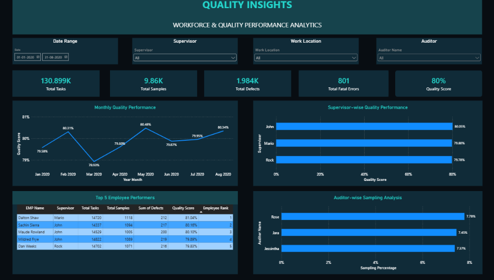

Project Overview
Developed an interactive Power BI dashboard to analyze workforce productivity and quality performance. The dashboard provides insights into employee performance, audit results, defects and quality trends.
Problem Statement
Monitoring workforce productivity and quality performance using raw data can make it difficult to identify trends, employee performance differences and quality issues.
This dashboard provides an interactive way to explore workforce and quality-related information.
Project Objectives
- Monitor employee productivity and task completion.
- Analyze quality performance and defect rates.
- Compare employee and supervisor performance.
- Identify monthly quality trends.
- Present important metrics through interactive visuals.
Key Features
- KPI cards for important quality metrics.
- Total tasks and sampling percentage analysis.
- Defect rate and fatal error rate tracking.
- Monthly quality performance trends.
- Supervisor-wise performance comparison.
- Top 5 employee performance leaderboard.
- Interactive filtering and data exploration.
Data Analysis and DAX
Prepared workforce and audit datasets using Excel. Created DAX measures in Power BI to calculate total tasks, sampling percentage, defect rate, fatal error rate and quality score.
Technologies Used
My Contribution
- Prepared and organized workforce quality data.
- Created DAX measures for quality metrics.
- Designed interactive KPI cards and charts.
- Developed employee and supervisor comparisons.
- Designed the dashboard to present quality insights.
Dashboard Preview
Designed an interactive Power BI dashboard to visualize workforce productivity, employee performance, and quality metrics, providing clear insights into operational performance.

Project Outcome
Transformed workforce data into meaningful insights through interactive KPIs and visualizations, enabling effective performance monitoring and data-driven decision-making.